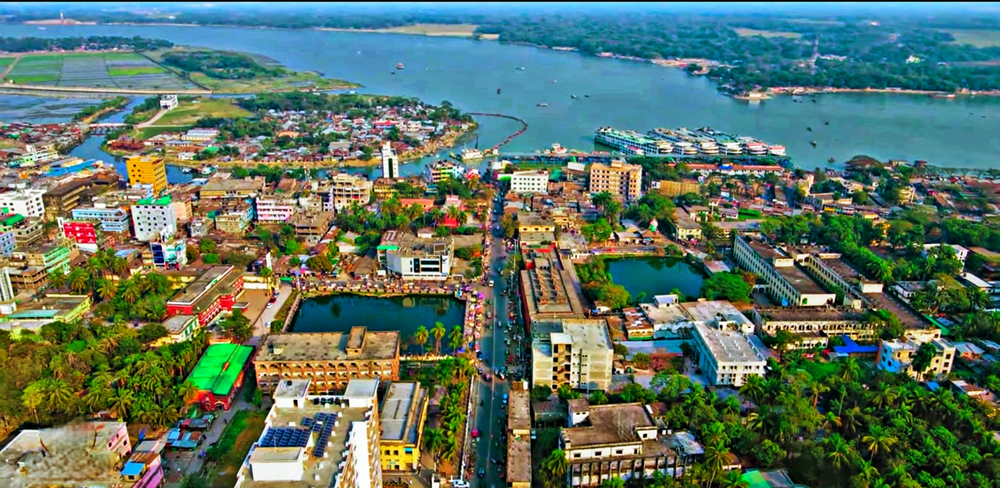
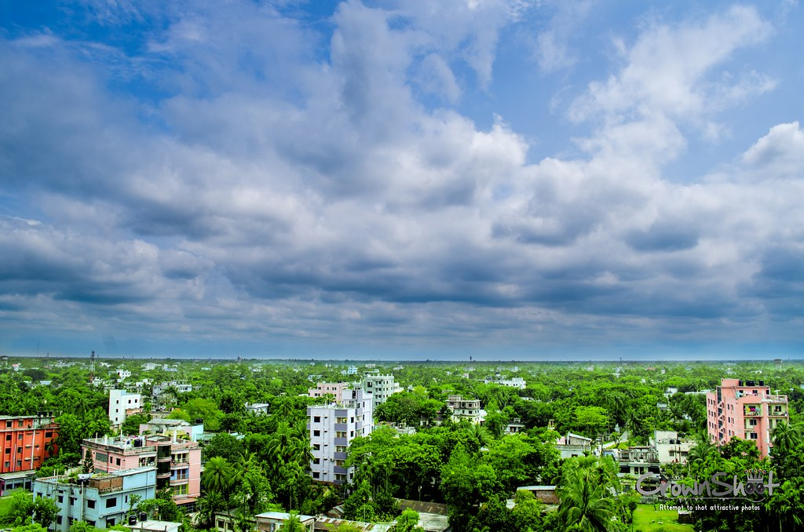

Bangladesh, to the east of India on the Bay of Bengal, is a South Asian country marked by lush greenery and
many waterways. Its Padma (Ganges), Meghna and Jamuna rivers create fertile plains, and travel by boat is
common. On the southern coast, the Sundarbans, an enormous mangrove forest shared with Eastern India, is
home to the royal Bengal tiger. Bangladesh did not exist as an independent state until 1971. Willem van
Schendel's state-of-the-art history navigates the extraordinary twists and turns that created modern
Bangladesh through ecological disaster, colonialism, partition, a war of independence and cultural renewal.
Bangladesh officially known as the People's Republic of Bangladesh is an independent nation located in South
Asia. It makes up the eastern and largest portion of the ethno-linguistic region of Bengal. It is situated
at the zenith of the Bay of Bengal and is bordered by Myanmar and India, and separated from Bhutan and Nepal
by the thin Siliguri Corridor.
DIVISIONS OF BANGLADESH
Dhaka
Dhaka is the capital city of Bangladesh, in southern Asia. Set beside the Buriganga River, it’s at the
center of national government, trade and culture. The 17th-century old city was the Mughal capital of
Bengal, and many palaces and mosques remain. American architect Louis Khan’s National Parliament House
complex typifies the huge, fast-growing modern metropolis.
Rajshahi
Rajshahi is a metropolitan city, and a major urban, commercial and educational centre of Bangladesh. It is
also the administrative seat of eponymous division and district. Located on the north bank of the Padma
River, near the Bangladesh-India border, the city has a population of over 763,952 residents.
Sylhet
Sylhet is a city in eastern Bangladesh, on the Surma River. It’s known for its Sufi shrines, like the
ornate tomb and mosque of 14th-century saint Hazrat Shah Jalal, now a major pilgrimage site near Dargah
Gate. The tiny Museum of Rajas contains belongings of the local folk poet Hasan Raja. A 3-domed gateway
stands at the 17th-century Shahi Eidgah, a huge open-air hilltop mosque built by Emperor Aurangzeb.
Chittagong
Chittagong is large port city on the southeastern coast of Bangladesh. The Ethnological Museum has
exhibits about the many different ethnic tribes across the country. Zia Memorial Museum, inside the former
Old Circuit House, displays items belonging to former president Ziaur Rahman, who was assassinated on the
site in 1981. The landmark Chandanpura Mosque has many onion-shaped domes and brightly painted minarets
Khulna
Serving as the third biggest industrial city of Bangladesh, Khulna is a divisional headquarter that
overseas the traffic of the Mongla and Sundarbans seaports. It is also famous for its shrimp processing
and newsprint production as well as being home to the only Telephone cable in the country. Khulna has the
distinction of being home to some of the biggest jute mills in the country.

Barisal
Barishal, is a major city that lies on the banks of the Kirtankhola river in south-central Bangladesh. It
is the largest city and the administrative headquarter of both Barisal District and Barisal Division. It
is one of the oldest municipalities and river ports of the country. Barisal municipality was established
in the year 1876 during the British rule in India and upgraded to City Corporation on 25 July 2002.

Rangpur
Rangpur was declared a district headquarters on December 16, 1769, and established as a municipality in
1869, making it one of the oldest municipalities in Bangladesh. The municipal office building was erected
in 1892 under the precedence Raja Janaki Ballav, Senior Chairman of the municipality. In 1890, the
Shyamasundari canal was excavated for the improvement of the town. Sharfuddin Ahmed Jhantu was first mayor
of Rangpur City Corporation.